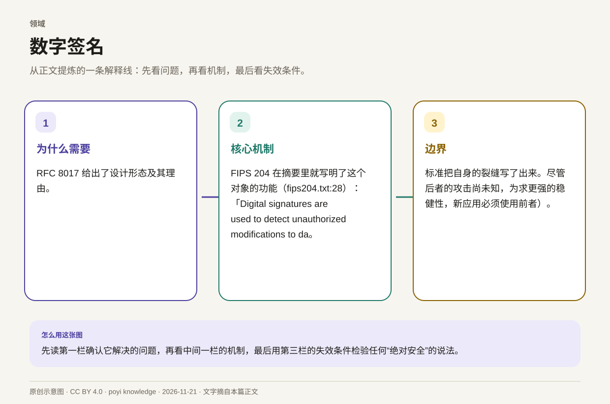

原理与机制
领域：数字签名（Digital Signatures）。FIPS 204 在摘要里就写明了这个对象的功能（fips204.txt:28）：「Digital signatures are used to detect unauthorized modifications to data and to authenticate the identity of the signatory.」（数字签名用于察觉数据的未经授权修改，并认证签署者的身份），同一行还给出证据属性：「This is known as non-repudiation since the signatory cannot easily repudiate the signature at a later time.」（这被称为不可否认性，因为签署者事后难以否认该签名）。机制在公告一节固定（fips204.txt:41）：「Signature generation uses a private key to generate a digital signature.Signature verification uses a public key that corresponds to but is not the same as the private key.」（签名生成用私钥；签名验证用与私钥相对应、但并非私钥本身的公钥），紧随其后的密钥事实是：「Each signatory possesses a key-pair composed of a private key and a corresponding public key.」（每个签署者持有一把私钥及其对应公钥组成的密钥对）。所以数字签名就是由私钥完成、任何持匹配公者可核验的操作——与加密条目同一套非对称结构，只是方向相反：这里私钥证明，公钥核验。

为什么重要
RFC 8017 给出了设计形态及其理由。其签名方案一节先定义方案类型（1698-1703）：「the signature generation operation produces a signature from a message with a signer's RSA private key, and the signature verification operation verifies the signature on the message with the signer's corresponding RSA public key.To verify a signature constructed with this type of scheme, it is necessary to have the message itself.」（签名生成用签署者私钥对消息产出签名，验证用对应公钥进行；用这类方案构造的签名，验证时必须持有消息本身——引文保留了跨行拼接的空格原样），随即划出边界（1703-1705）：「In this way, signature schemes with appendix are distinguished from signature schemes with message recovery, which are not supported in this document.」（这样，带附录的签名方案便与带消息恢复的签名方案相区别，后者不在本标准支持之列）。选附录模型的理由是核验简单而通用——消息与签名同行送达，而不必从签名中重构；1708-1710 一句（按行引用）说明设计去向：这些方案被定为适用于 X.509 证书的签名算法。在附录模型内部，设计工作落在编码方法上，新方案的理由印在 1813-1815：「RSASSA-PSS is different from other RSA-based signature schemes in that it is probabilistic rather than deterministic, incorporating a randomly generated salt value.」（RSASSA-PSS 不同于其他 RSA 签名方案：它是概率化的而非确定性的，包含一个随机生成的盐值）。签名时的随机性正是该节所讨论的更强安全证明的支点；确定性签名仍可同样验证，但按同段讨论，对它的证明更松。
应用与实例
签名的落地形态见于 SSL 3.0 文本。它先在附录词汇表里定义工具（2813-2816）：「Digital signatures utilize public key cryptography and one-way hash functions to produce a signature of the data that can be authenticated, and is difficult to forge or repudiate.」（数字签名利用公钥密码与单向哈希函数产生可认证、且难以伪造或否认的数据签名——引文中的多空格间距是词汇表六空格缩进跨行拼接的原样）。然后规定线路行为（rfc6101.txt:2007-2008）：「RSA digital signatures are performed using PKCS #1 [PKCS1] block type 1.」（RSA 数字签名使用 PKCS #1 的 1 型块运算完成）——正是 RFC 8017 后来标准化的那个 PKCS #1 家族。握手用签名安放信任（3402-3404）：「handshake protocol can also optionally authenticate parties who have certificates signed by a trusted certificate authority.」（握手协议可选择认证持有受信证书机构所签证书的一方）；抗攻击附录在 3408-3412 数出三种认证模式：服务器被认证时信道可防中间人攻击，完全匿名会话则天然脆弱（该句为枚举行文，按行引用）。FIPS 204 保留通用应用清单（fips204.txt:51）：标准把算法指向电子邮件、资金 transfer、数据交换、软件分发与数据存储等需要完整性与来源认证的场合。
边界与攻击面
标准把自身的裂缝写了出来。方案策略（1716-1721）很罕见——在没有已知攻击的情况下选择了更稳的一边：「Two signature schemes with appendix are specified in this document: RSASSA-PSS and RSASSA-PKCS1-v1_5.Although no attacks are known against RSASSA-PKCS1-v1_5, in the interest of increased robustness, RSASSA-PSS is REQUIRED in new applications.」（本文规定两种带附录的签名方案：RSASSA-PSS 与 RSASSA-PKCS1-v1_5；尽管后者的攻击尚未知，为求更强的稳健性，新应用必须使用前者）。偏好新编码的理由印在 1788-1789：「In contrast to the RSASSA-PKCS1-v1_5 signature scheme, a hash function identifier is not embedded in the EMSA-PSS encoded message」（与 v1_5 方案不同，EMSA-PSS 编码消息里不嵌入哈希函数标识符）——所以同段建议掩码生成函数使用同一哈希（那段建议在留存件里跨页眉排印，故按行引用 1795-1802，不作逐字标记）。安全注释还点名了旧攻击文献：Desmedt-Odlyzko 一类的乘法关系攻击、Coron-Naccache-Stern 的加强版（对本编码被判为不现实，却对某些 ISO/IEC 9796-2 实例有效），随后是 1993-1995：「Coppersmith, Halevi, and Jutla [FORGERY] subsequently extended Coron et al.'s attack to break the ISO/IEC 9796-1 signature scheme with message recovery.」（Coppersmith、Halevi、Jutla 进而把 Coron 等人的攻击扩展为攻破带消息恢复的 ISO/IEC 9796-1 签名方案）。文件自己总结的教训指向编码而非 RSA 本身：进入签名原语的输入必须精心构造，而被攻破的正是那些从签名中恢复消息的方案。
历史与背景
留存文件确实印出的年代线索。FIPS 205 写下自己的谱系（fips205.txt:27）：「SLH-DSA is based on SPHINCS+, which was selected for standardization as part of the NIST Post-Quantum Cryptography Standardization process.」（SLH-DSA 基于 SPHINCS+，后者是在 NIST 后量子密码标准化过程中被选中标准化的方案），又在第 280 行记录过程本身：「After three rounds of evaluation and analysis, NIST selected the first four algorithms for standardization.」（经过三轮评估与分析，NIST 选定了首批四个标准化算法）。为何会有这次选择，理由印在 276：「Unlike the algorithms specified in FIPS 186-5 [1], SLH-DSA is designed to provide resistance against attacks from a large-scale quantum computer.」（不同于 FIPS 186-5 所规定的算法，SLH-DSA 的设计目标是抵抗大规模量子计算机的攻击）。该标准在第 12 行印着 Published: August 13, 2024，与 FIPS 204 相同（fips204.txt:13）；RFC 8017 重发布 PKCS #1 v2.2 的日期是 2016 年 11 月并废止 RFC 3447（rfc8017.txt:28-32）。再往前，历史性的 SSL 3.0 重发布自己印着年代：它把最后发布的协议版本定为 1996 年 11 月 18 日版（rfc6101.txt:36-37；该句属于另一份登记文件而非该条目声明的来源，故只按行转述、不作标记），其数字签名标准词条印出 FIPS PUB 186 的 1994 年 5 月发布日期（rfc6101.txt:2807-2811；该词条把标准名称排印在 ASCII 双引号内，故日期按行引用）。这些文件都没有印出签名作为整体的发明者或首次提案日期，本文对此不作断言。
逐步示例与核验
范围模型
列出属于该条目的代表实体、相邻实体、时间断点与跨域关系；范围外对象不并入。
参考出处
- Wikipedia search entry for 数字签名. https://zh.wikipedia.org/w/index.php?search=%E6%95%B0%E5%AD%97%E7%AD%BE%E5%90%8D
- A Brief History of Cryptology and Cryptographic Algorithms (Dooley, Springer 2013). https://link.springer.com/book/10.1007/978-3-319-01628-3